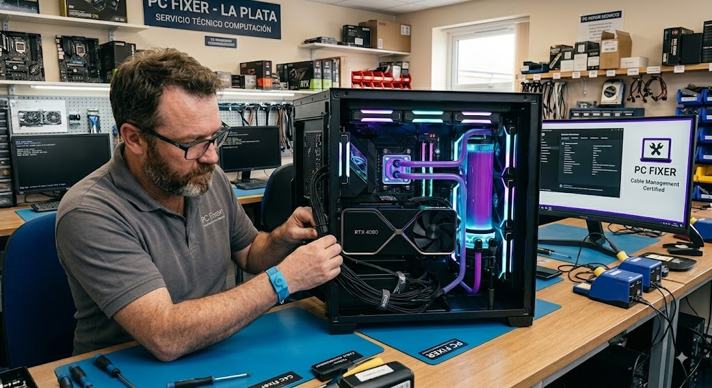
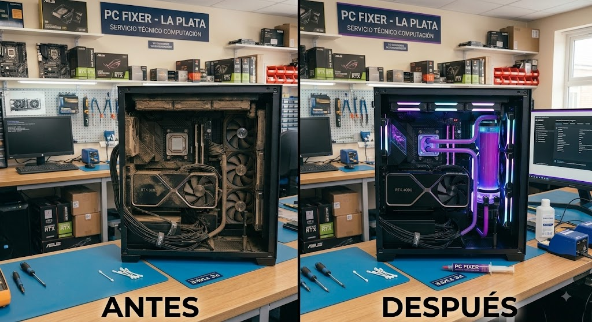
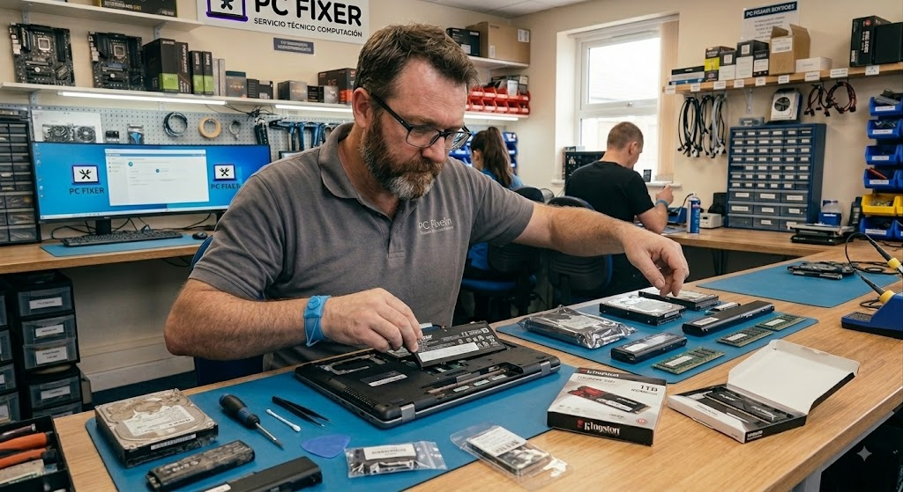
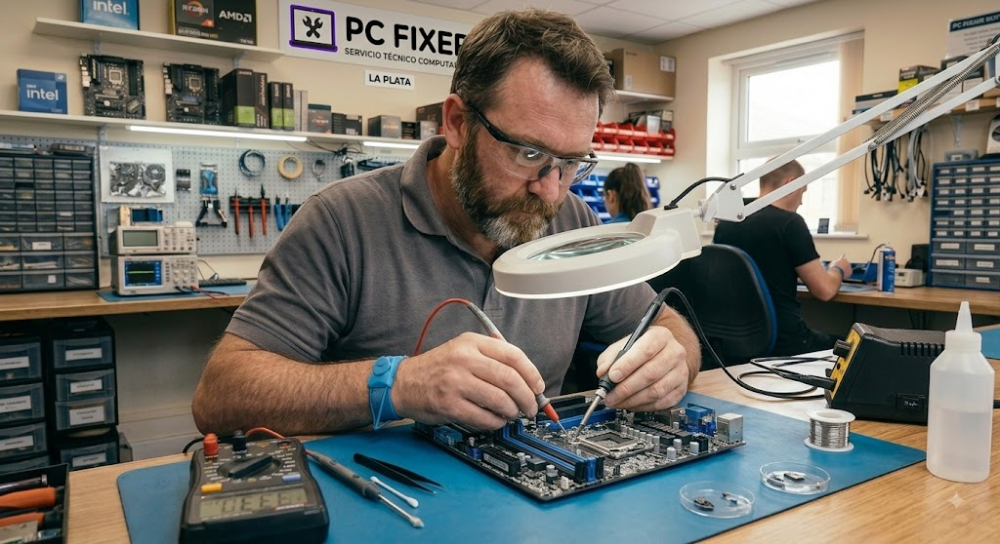
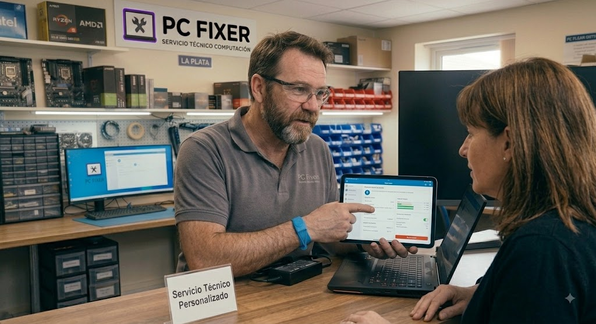

Armado de PC Gamer y Workstation a medida

Ensamble completo, prueba de estrés de 24 hs y optimización de flujo de aire para esta build orientada a edición de video y gaming en 1440p.

Ensamble completo, prueba de estrés de 24 hs y optimización de flujo de aire para esta build orientada a edición de video y gaming en 1440p.

Limpieza integral, cambio de pasta térmica de alta conductividad y sustitución de pads térmicos en una placa de video que levantaba 85°C. Rendimiento recuperado a 65°C estables.

Reemplazo de disco HDD a SSD NVMe + ampliación a 16 GB RAM en notebook de trabajo. Pasó de tardar 3 minutos en encender a arrancar en solo 8 segundos.

Reparación de cortocircuito en línea de alimentación principal de motherboard. Equipo recuperado al 100% sin necesidad de cambiar la placa entera.
